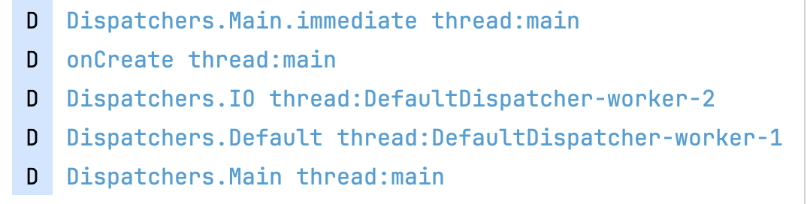
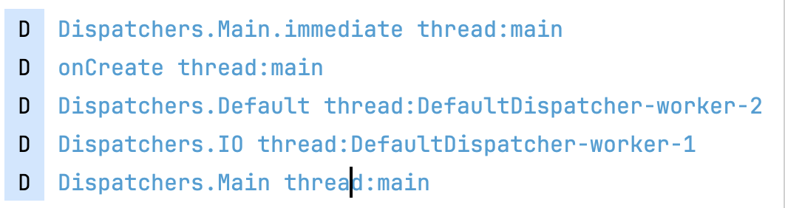

在讲解如何切换线程之前，有必要先了解下CoroutineScope。协程作用域，它里面持有CoroutineContext，用来管理它的作用域范围内的所有协程。
CoroutineScope(协程作用域)
CoroutineScope组成
 可见它只是一个接口，里面定义了一个coroutineContext。前面介绍过coroutineContext是协程的上下文，它里面是由Element拼接而成的，而Element主要分为如下几种：
可见它只是一个接口，里面定义了一个coroutineContext。前面介绍过coroutineContext是协程的上下文，它里面是由Element拼接而成的，而Element主要分为如下几种：
- CoroutineDispatcher：它是线程分发器。其中Dispatcher.IO和Dispatcher.Main、Dispatchers.Main.immediate都是继承自于它
- Job：它是用来取消协程、父协程与子协程取得联系的桥梁。常见的有SupervisorJob
- CoroutineName：用来给协程起名字的作用
- CoroutineExceptionHandler：它是用来捕捉协程异常的回调器
所以完整的CoroutineContext组成部分如下： job+dispatchers+CoroutineName+CoroutineExceptionHandler
CoroutineScope分类
目前kotlin已经内置了各种CoroutineScope，下面来说下他们的区别
GlobalScope
上面用到的GlobalScope就是一个协程作用域：
 可以看出来它是一个单例的scope，生命周期和app保持一致，并且它的context是一个EmptyCoroutineContext。平时开发时候不会去用它
可以看出来它是一个单例的scope，生命周期和app保持一致，并且它的context是一个EmptyCoroutineContext。平时开发时候不会去用它
runBlocking
是一个阻塞式的协程作用域，会阻塞协程外面的线程，内部是通过java的LockSupport.park阻塞住线程来实现的。


MainScope
它是一个指定协程分发在主线程中，并且使用到的Job是SupervisorJob，它的作用是当子协程出错的时候，不影响到父协程中的其他子协程
 它是一个ContextScope，继承自CoroutineScope，并且它的context是由SupervisorJob()和Dispatchers.Main组成的一个context。我们一般自定义CoroutineScope的时候也是定义一个ContextScope，他的构造方法需要传入一个CoroutineContext。
它是一个ContextScope，继承自CoroutineScope，并且它的context是由SupervisorJob()和Dispatchers.Main组成的一个context。我们一般自定义CoroutineScope的时候也是定义一个ContextScope，他的构造方法需要传入一个CoroutineContext。

CoroutineScope顶级方法
 它也是一个ContextScope，它的上下文先看传进来的context中的job是否为空，如果为空，则初始化一个job。如果不为空，则使用传进来的context。
它也是一个ContextScope，它的上下文先看传进来的context中的job是否为空，如果为空，则初始化一个job。如果不为空，则使用传进来的context。
coroutineScope顶级方法
 它是一个suspend方法，它是通过闭包的形式返回一个CoroutineScope，对应的字节码如下：
它是一个suspend方法，它是通过闭包的形式返回一个CoroutineScope，对应的字节码如下：
 会将ScopeCoroutine给到block，也就是闭包中的CoroutineScope，接着会调用UndispatchedKt.startUndispatchedOrReturn:
会将ScopeCoroutine给到block，也就是闭包中的CoroutineScope，接着会调用UndispatchedKt.startUndispatchedOrReturn:
 最终调用了block.invoke方法，写个demo看下效果：
最终调用了block.invoke方法，写个demo看下效果：
 日志如下：
日志如下：
 从日志可以看出来，它是先等到coroutineScope里面delay执行完了，才执行外面的逻辑。在字节码层面，它会把coroutineScope外面的代码编译成SuspendLambda，它也是个Continuation，等到执行完了coroutineScope内部的代码，才会回调到coroutineScope外面的SuspendLambda中来：
从日志可以看出来，它是先等到coroutineScope里面delay执行完了，才执行外面的逻辑。在字节码层面，它会把coroutineScope外面的代码编译成SuspendLambda，它也是个Continuation，等到执行完了coroutineScope内部的代码，才会回调到coroutineScope外面的SuspendLambda中来：
 上面分析过UndispatchedKt.startUndispatchedOrReturn中调用了block的invoke方法，此处的block正对应了CoroutineDispatchersActivity$demo7$1这个SuspendLambda对象：
上面分析过UndispatchedKt.startUndispatchedOrReturn中调用了block的invoke方法，此处的block正对应了CoroutineDispatchersActivity$demo7$1这个SuspendLambda对象：
 在demo7中将CoroutineDispatchersActivity$demo7$1这个continuation传递到coroutineScope中，而它的invoke方法如下：
创建了CoroutineDispatchersActivity$demo7$1后，继而调用了invokeSuspend方法，而invokeSuspend里面是要等到coroutineScope闭包中的delay挂起结束后，才会再次回到invokeSuspend方法，最后才会输出「demo7: coroutineScope outside」的日志，这也是协程挂起的调用顺序。
在demo7中将CoroutineDispatchersActivity$demo7$1这个continuation传递到coroutineScope中，而它的invoke方法如下：
创建了CoroutineDispatchersActivity$demo7$1后，继而调用了invokeSuspend方法，而invokeSuspend里面是要等到coroutineScope闭包中的delay挂起结束后，才会再次回到invokeSuspend方法，最后才会输出「demo7: coroutineScope outside」的日志，这也是协程挂起的调用顺序。
supervisorScope顶级方法
它和上面的coroutineScope顶级方法差不多，也是先调用完闭包中的逻辑，然后才执行supervisorScope外面的代码。看下它的实现就知道区别了：
 他所使用的CoroutineScope是一个SupervisorCoroutine，它和上面用到的ScopeCoroutine区别是重写了childCancelled方法，并返回false，此方法是子协程发生异常后，该不该取消其它的子协程，下面来验证下：
他所使用的CoroutineScope是一个SupervisorCoroutine，它和上面用到的ScopeCoroutine区别是重写了childCancelled方法，并返回false，此方法是子协程发生异常后，该不该取消其它的子协程，下面来验证下：

 在supervisorScope闭包中launch1发生异常了，由于supervisorScope不会去处理异常，将异常交给了launch1处理，所以launch2中的代码能继续执行。而在coroutineScope中，当launch1发生异常的时候，会将异常交给了coroutineScope，最终导致launch2的协程无法继续执行。
在supervisorScope闭包中launch1发生异常了，由于supervisorScope不会去处理异常，将异常交给了launch1处理，所以launch2中的代码能继续执行。而在coroutineScope中，当launch1发生异常的时候，会将异常交给了coroutineScope，最终导致launch2的协程无法继续执行。
Job
Job实现了CoroutineContext.Element，可以用来取消、启动一个协程，并且和父协程绑定了关系：
 它下面有几个关键的子类：
它下面有几个关键的子类：
 从图上可以看出来前面分析的coroutineScope和supervisorScope两个顶级方法所使用的作用域ScopeCoroutine最终也是一个Job。
从图上可以看出来前面分析的coroutineScope和supervisorScope两个顶级方法所使用的作用域ScopeCoroutine最终也是一个Job。
线程例子
先看一个例子：

分别指定了四种线程的用法，日志如下： 第一次：  第二次： 
Dispatchers.Main.immediate：指定的主线程会最先执行
Dispatchers.Main：指定的主线程会晚于协程外面的主线程
Dispatchers.IO和Dispatchers.Default：指定的线程没有先后之分
CoroutineScope.lanuch
lanuch方法是协程作用域的扩展方法，比如上面例子中的GlobalScope它就是继承自CoroutineScope:
|
|
- 参数：
- context：launc传进来的context，比如上面例子中传进来的Dispatchers.Main、Dispatchers.IO这些都是CoroutineContext。如果没传就用EmptyCoroutineContext。
- start：CoroutineStart的枚举类，表示启动模式，默认是DEFAULT
- block：协程代码块，是一个CoroutineScope的扩展挂起函数
- 将外界传进来的context和当前CoroutineScope的context进行合并处理
- 默认是DEFAULT模式，所以会初始化一个StandaloneCoroutine，会把newContext作为自己的parentContext，它既是一个Continuation，也是一个CoroutineScope
- 调用StandaloneCoroutine的start方法，并把启动模式，StandaloneCoroutine，协程挂起函数传进去了
- StandaloneCoroutine作为lauch的返回值
StandaloneCoroutine它是一个Job类型，也是继承自AbstractCoroutine，看下它的start方法：
 这里调用了start变量的invoke方法，因为CoroutineStart重写了invoke方法，所以能直接这么调，相当于是一个闭包的调用方式，这里调用了三参的invoke：
这里调用了start变量的invoke方法，因为CoroutineStart重写了invoke方法，所以能直接这么调，相当于是一个闭包的调用方式，这里调用了三参的invoke：

- 第一个参数：挂起函数闭包，也就是协程要执行的代码块
- 第二个参数：start方法传进来的StandaloneCoroutine
- 第三个参数：start方法传进来的this，也是StandaloneCoroutine
CoroutineStart是DEFAULT类型，所以会调用挂起函数的startCoroutineCancellable方法：
 在上面分析createCoroutine时候也是通过createCoroutineUnintercepted(receiver, completion).intercepted()，创建了delegate，最终是一个Continuation，也是一个suspendLambda。我们直接看ContinuationImpl的intercepted方法：
在上面分析createCoroutine时候也是通过createCoroutineUnintercepted(receiver, completion).intercepted()，创建了delegate，最终是一个Continuation，也是一个suspendLambda。我们直接看ContinuationImpl的intercepted方法：
 intercepted方法里面取context变量中的key为ContinuationInterceptor的context，而context最终是completion的context，completion是前面start方法传进来的StandaloneCoroutine，它是继承自AbstractCoroutine：
intercepted方法里面取context变量中的key为ContinuationInterceptor的context，而context最终是completion的context，completion是前面start方法传进来的StandaloneCoroutine，它是继承自AbstractCoroutine：
 parentContext是launch方法传进来的context+CoroutineScope自己的context拼接的一个context
this：AbstractCoroutine实现了job接口，job也是一个CoroutineContext
在上面例子中lauch方法是通过GlobalScope启动的，它的context是一个EmptyCoroutineContext，所以传给AbstractCoroutine的parentContext其实就是launch方法传进去的context，也就是Dispatchers.io、Dispatchers.main等。
回到ContinuationImpl的intercepted方法，取context的ContinuationInterceptor,然后调用interceptContinuation方法，看下Dispatchers.io，它最终继承自CoroutineDispatcher：
parentContext是launch方法传进来的context+CoroutineScope自己的context拼接的一个context
this：AbstractCoroutine实现了job接口，job也是一个CoroutineContext
在上面例子中lauch方法是通过GlobalScope启动的，它的context是一个EmptyCoroutineContext，所以传给AbstractCoroutine的parentContext其实就是launch方法传进去的context，也就是Dispatchers.io、Dispatchers.main等。
回到ContinuationImpl的intercepted方法，取context的ContinuationInterceptor,然后调用interceptContinuation方法，看下Dispatchers.io，它最终继承自CoroutineDispatcher：
 结论：
如果lauch传的是Dispatchers.io，则lauch先创建DispatchedContinuation，然后调用resumeCancellableWith方法：
结论：
如果lauch传的是Dispatchers.io，则lauch先创建DispatchedContinuation，然后调用resumeCancellableWith方法：
 如果dispatcher.isDispatchNeeded（默认是true），才会进入到dispatch逻辑，看下dispatchers.io：
如果dispatcher.isDispatchNeeded（默认是true），才会进入到dispatch逻辑，看下dispatchers.io：
 调用了default.dispatch方法，diefault是由UnlimitedIoScheduler.limitedParallelism创建的LimitedDispatcher，最终会执行到UnlimitedIoScheduler.dispatch方法：
调用了default.dispatch方法，diefault是由UnlimitedIoScheduler.limitedParallelism创建的LimitedDispatcher，最终会执行到UnlimitedIoScheduler.dispatch方法：
 DefaultScheduler的dispatchWithContext方法如下：
DefaultScheduler的dispatchWithContext方法如下：
 coroutineScheduler创建如下：
coroutineScheduler创建如下：
 最终会执行到CoroutineScheduler的dispatch方法，里面的代码就不细看了，是线程池部分执行block，关于这部分后面可以深究下，而block是在DispatchedContinuation中resumeCancellableWith方法里面把this给到了dispatcher的dispatch方法，说明DispatchedContinuation实现了Runnable接口，直接看它的run方法，该方法定义在它的父类DispatchedTask中：
最终会执行到CoroutineScheduler的dispatch方法，里面的代码就不细看了，是线程池部分执行block，关于这部分后面可以深究下，而block是在DispatchedContinuation中resumeCancellableWith方法里面把this给到了dispatcher的dispatch方法，说明DispatchedContinuation实现了Runnable接口，直接看它的run方法，该方法定义在它的父类DispatchedTask中：
 此处执行了delegate的resume方法，resume方法执行了resumeWith，注意此处的delegate是DispatchedContinuation中传进来的continuation，它是createCoroutineUnintercepted(receiver, completion).intercepted()创建的delegate，是一个continuation对象，也是suspendlambda，在上面创建协程分析过baseContinuationImpl的resumeWith方法，里面会执行协程的invokeSuspend方法，也就是我们的协程执行代码。执行完了后会执行complete的resumeWith，而通过lauch创建的协程，此处的complete是launch方法构造的StandaloneCoroutine对象，它的resumeWith方法定义在AbstractCoroutine中：
此处执行了delegate的resume方法，resume方法执行了resumeWith，注意此处的delegate是DispatchedContinuation中传进来的continuation，它是createCoroutineUnintercepted(receiver, completion).intercepted()创建的delegate，是一个continuation对象，也是suspendlambda，在上面创建协程分析过baseContinuationImpl的resumeWith方法，里面会执行协程的invokeSuspend方法，也就是我们的协程执行代码。执行完了后会执行complete的resumeWith，而通过lauch创建的协程，此处的complete是launch方法构造的StandaloneCoroutine对象，它的resumeWith方法定义在AbstractCoroutine中：
 AbstractCoroutine的afterCompletion：
AbstractCoroutine的afterCompletion：
 此处没有逻辑执行。
我们注意到在讲解协程启动的时候，创建delegate的continuation时候调用createCoroutineUnintercepted只传了complete，没有传receiver。而在launch启动协程时候，将StandaloneCoroutine作为receiver传给了createCoroutineUnintercepted方法：
此处没有逻辑执行。
我们注意到在讲解协程启动的时候，创建delegate的continuation时候调用createCoroutineUnintercepted只传了complete，没有传receiver。而在launch启动协程时候，将StandaloneCoroutine作为receiver传给了createCoroutineUnintercepted方法：
 默认的挂起函数的create方法是抛异常的，需要SuspendLambda的子类自己去实现：
默认的挂起函数的create方法是抛异常的，需要SuspendLambda的子类自己去实现：
 编译后的SuspendLambda的子类create实现：
编译后的SuspendLambda的子类create实现：
 此处将receiver传到create中没有用到，所以其实跟单参没有什么区别啊。
此处将receiver传到create中没有用到，所以其实跟单参没有什么区别啊。
总结
结论：协程在启动过程中会取CoroutineContext中的ContinuationInterceptor，然后执行interceptContinuation。而此时如果是一个Dispatchers.IO，它又是继承自CoroutineDispatcher，所以会执行到了CoroutineDispatcher的interceptContinuation。此时得到的是一个DispatchedContinuation对象，并把当前的CoroutineDispatcher和协程启动过程中创建的StandaloneCoroutine传给了DispatchedContinuation。接着会执行DispatchedContinuation的resumeCancellableWith方法，在该方法里面会判断CoroutineDispatcher.isDispatchNeeded，如果是的话，会调用CoroutineDispatcher的dispatch方法，最终会通过线程池会执行到DispatchedContinuation的run方法，因为它是一个Runnable对象。在run方法里面，会执行continuation的resume方法，而此处的continuation是编译器给我们创建的SuspendLambda的子类，最终会执行它的invokeSuspend方法。执行完后会执行协程启动过程中的StandaloneCoroutine的resumeWith方法。
时序图: